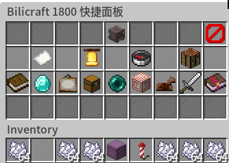

Loading header...
目录插件
目录插件是一个提供了主要功能的页面导航插件。签到、钓鱼、技能等插件都在这里提供了入口。

目录菜单的交互界面
指令一览
- /c 打开目录菜单
功能介绍
目录菜单的交互界面以物品栏的形式呈现。通过左键点击对应物品可以选择对应内容。鼠标悬停在物品上以查看对应选项。可以从这里进入签到、传送、飞行方块等的交互界面。
目录菜单为记不住指令的玩家提供一个快捷入口，并不是多数功能的唯一进入途径。
目录